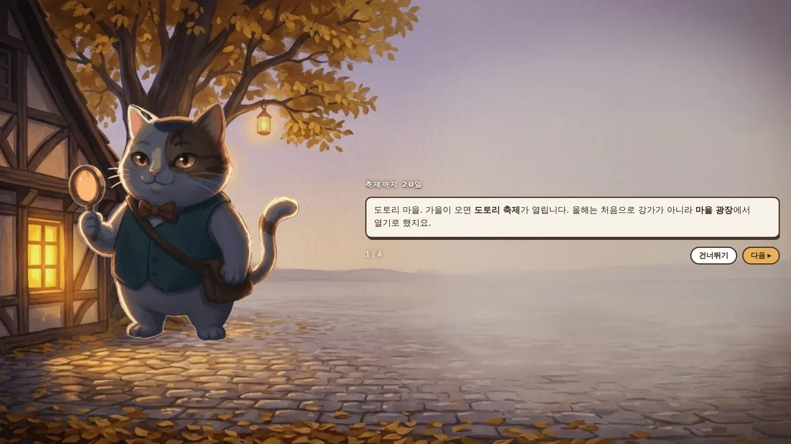
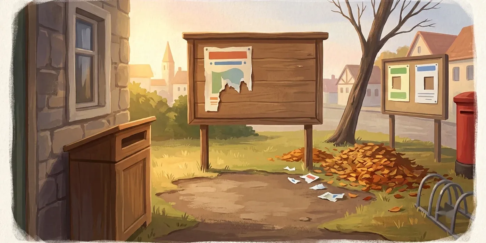

🔍 추리 게임 · 무료 · 설치 없음
탐정 망고의 춤추는 대수사선
“단서가 말해 주는 것만 믿는다. 그럴듯한 짐작은 답이 아니야.”
- 사건 하나 15~25분
- 사건 5개
- 가로 화면
- 자동 저장 · 백업 코드
회원가입 없이 누르면 바로 시작돼요
어떤 게임인가요?
도토리 마을에서 작은 탐정 사무소를 하는 고양이 망고. 손님은 별로 없지만 추리만큼은 진지해요.
가을 도토리 축제를 앞두고 마을에 이상한 일이 하나씩 일어나요. 급식실에서 묵 한 통이 사라지고, 게시판 포스터가 밤새 찢어지고, 시계탑 종이 울리지 않은 아침이 찾아와요.
범인을 찍어 맞히는 게임이 아니에요. 눈앞의 단서가 정말로 무엇을 증명하는지 하나하나 따져야 풀리는 진짜 추리 게임이에요.
이렇게 해요
- STEP 1
현장을 살펴요
확대경을 끌어 사건 현장 구석구석을 조사하고 단서를 모아요.
- STEP 2
이야기를 들어요
마을 주민을 심문해요. 중요한 말은 수첩에 증언 카드로 남아요.
- STEP 3
추리를 쌓아요
단서 카드를 골라 「그래서 무엇이 증명되는지」 한 단계씩 결론을 쌓아 범인을 밝혀요.


📂 지금 풀 수 있는 사건
- ① 사라진 도토리묵
- ② 찢어진 축제 포스터
- ③ 시계탑 종이 안 울린 아침
- ④ 어긋난 말뚝 세 개
- ⑤ 도서관의 비 오는 날
사건마다 실마리가 이어져서, 다섯 개를 모두 풀면 도토리 마을의 더 큰 이야기가 보이기 시작해요. 여섯 번째 사건도 준비하고 있어요.
이런 분께 추천해요
- 짧고 알찬 추리 게임을 찾는 분
- 아이와 함께 머리를 맞대고 할 게임을 찾는 가족
- 「이 증언이 뭘 뜻하지?」 하며 토론하는 걸 좋아하는 분
처음이라면 첫 화면에서 「처음이에요」를 눌러 주세요. 수상한 말에 밑줄이 그어지고, 틀리면 이유를 바로 알려 줘요. 추리 게임에 자신 있다면 「추리게임 해봤어요」로 도전해 보세요. 막히면 위쪽 💡 등불로 힌트를 받을 수 있어요.
📱 어떤 기기에서 하면 좋을까요?
- 가장 좋아요태블릿 아이패드·갤럭시탭
화면이 넓어 현장 그림을 살피기 좋고, 여럿이 함께 보기에도 딱이에요. 가로로 눕혀 주세요.
- 좋아요컴퓨터·노트북 크롬·엣지·웨일
첫 화면의 「⛶ 전체 화면」을 누르면 더 몰입돼요.
- 괜찮아요휴대폰 가로로 돌려서
충분히 즐길 수 있지만 글씨가 조금 작게 느껴질 수 있어요.
오른쪽 위 메뉴(⋮ 또는 ···)에서 「다른 브라우저로 열기」를 눌러 크롬이나 사파리로 열어 주세요. 앱 안에서는 전체 화면이 안 되고 저장이 풀릴 수 있어요.
🍎 아이폰·아이패드에서는
- ① 사파리로 열기
주소를 사파리에서 열어 주세요.
- ② 홈 화면에 추가하기 (강력 추천)
아이폰은 「전체 화면」 버튼이 동작하지 않아요. 사파리 아래쪽 공유 버튼(네모에 위쪽 화살표) → 「홈 화면에 추가」 → 「추가」를 누르면, 홈 화면의 망고 아이콘으로 주소창 없이 꽉 찬 화면이 열려요.
- ③ 가로로 돌리기
화면이 안 돌아가면 제어 센터에서 화면 회전 잠금을 꺼 주세요.
- ④ 소리가 안 나요
아이폰 옆의 무음 스위치가 켜져 있으면 소리가 나지 않아요.
- ⑤ 진행이 사라졌어요?
아이폰 사파리는 한동안 들어가지 않은 사이트의 기록을 스스로 지우기도 해요. 첫 화면의 「🔑 백업 코드」로 코드를 받아 두면 언제든, 다른 기기에서도 이어서 할 수 있어요.
🤖 갤럭시 등 안드로이드에서는
크롬이나 삼성 인터넷으로 열고 「⛶ 전체 화면」을 누르면 돼요. 메뉴(⋮)에서 「홈 화면에 추가」를 해 두면 다음부터 버튼을 누르지 않아도 꽉 찬 화면으로 열려요.
▶ 바로 해 보기
설치도, 회원가입도 필요 없어요.
탐정 망고 시작하기game.edoori.co.kr/mango/